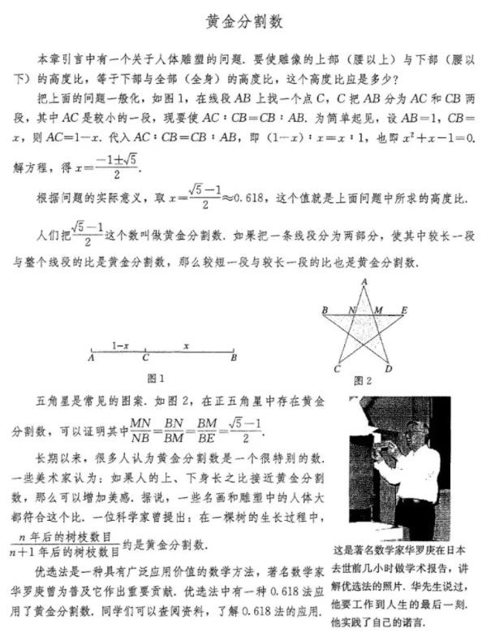

第二十一章 一元二次方程
注: 如非特殊说明, 以下图片都来自电子课本网
21.1 一元二次方程
等号两边都是整式, 只含有一个未知数(一元), 并且未知数的最高次数是2(二次)的方程,叫做一元二次方程(quadratic equation in one unknown).
一元二次方程的一般形式是
$ax^2 + bx + c = 0$ (a≠0)
21.2 解一元二次方程
21.2.1 配方法
$x^2 + 6x + 4 = 0$
解:
$x^2 + 6x + 9 - 5 = 0$(配方法)
$(x + 3)^2 = 5$
$x + 3 = ± \sqrt 5$
$x = -3 ± \sqrt 5$
21.2.2 公式法
$ax^2 + bx + c = 0$ (a≠0)
解:
$ax^2 + bx = -c$
$x^2 + {b \over a}x = -{c \over a}$
配方得:
$(x + {b \over 2a})^2 = {b^2 - 4ac \over 4a^2}$
因为a≠0, 所以 $4a^2 > 0$. 式子 $b^2 - 4ac$ 的值有以下三种情况:
(1). $b^2 - 4ac > 0$
$x = {-b ± \sqrt {b^2 - 4ac} \over 2a}$(求根公式)
(2). $b^2 - 4ac = 0$
$x = -{b \over 2a}$
(3). $b^2 - 4ac < 0$(无实数根)
一般地, 式子 $b^2 - 4ac$ 叫做一元二次方程 $ax^2 + bx + c = 0$ 根的判别式,
通常用希腊字母“△”表示它, 即 $△=b^2-4ac$
21.2.3 因式分解法
先因式分解, 使方程化为两个一次式的乘积等于0的形式,
再使这两个一次式分别等于0, 从而实现降次. 这种解一元二次方程的方法叫做因式分解法.
例1: $10x - 4.9x^2 = 0$
解:
$x(10 - 4.9x) = 0$
$x_1 = 0, \ x_2 = {100 \over 49}$
例2: $x^2 - x -2 = 0$
解:
$(x + 1)(x - 2) = 0$
$x_1 = -1, \ x_2 = 2$
21.2.4 一元二次方程的根与系数的关系
$x = {-b ± \sqrt {b^2 - 4ac} \over 2a}$(求根公式), 相加&相乘可得到:
$x_1 + x_2 = - {b \over a}$
$x_1 x_2 = {c \over a}$
阅读与思考 黄金分割数

下方还未整理...
21.3 实际问题与一元二次方程
数学活动
小结
复习题21